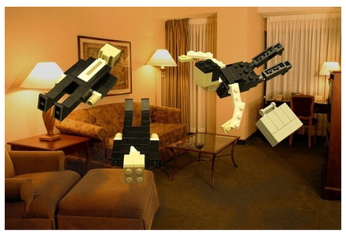
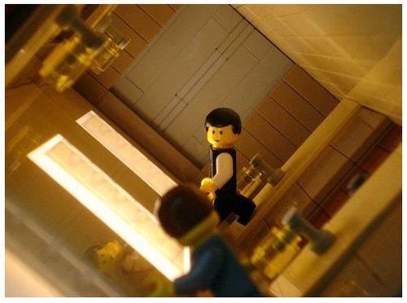
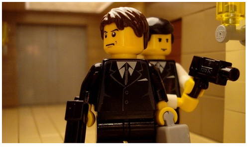

Tue, 31 Aug 2010 12:56:00 · Inception · lego · movies · DiCaprio
Awesome Inception Scenes Recreated with Lego
~ Back by popular demand :-p 


Here’s for some more awesome pix ~ http://is.gd/en3aq
Tue, 31 Aug 2010 12:56:00 · Inception · lego · movies · DiCaprio
~ Back by popular demand :-p 


Here’s for some more awesome pix ~ http://is.gd/en3aq